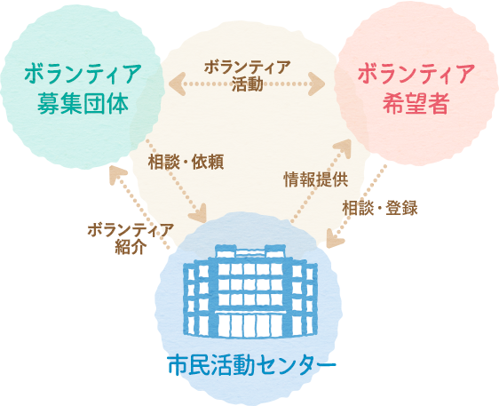
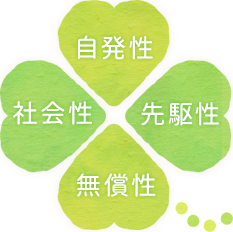

宮崎市民活動センターにて個人ボランティアの登録が必要になります。
簡単な手続き後、ボランティア先をコーディネーターと一緒に探し、
希望する団体へおつなぎします。登録は無料です。
また登録することにより、新しいボランティア募集の情報をメールで受け取ることができます。
※単発型のイベントボランティアに関してはセンター登録は不要となりますので直接お問合せ先へご連絡ください。

そもそも「ボランティア」には「志願者・自ら進んでする人」の意思があります。
つまり、ボランティアは人から言われてするものではなく、自らの意思で自主的な活動なのです。
ボランティアの4原則
- 自発性
- 自ら進んですること。他から強制されてするものではありません。
- 社会性
- 市民参加によって社会をよりよくしていこうとする活動です。

- 無償性
- 見返りを求めての活動ではないことです。
- 先駆性
- 社会における問題点を自ら見つけ、解決していくことです。
ボランティア活動をする上で気をつけたいこと
活動対象者の気持ちを大切にしましょう。
プライバシーを守りましょう。
約束を守りましょう。
心配なことは相談しましょう。